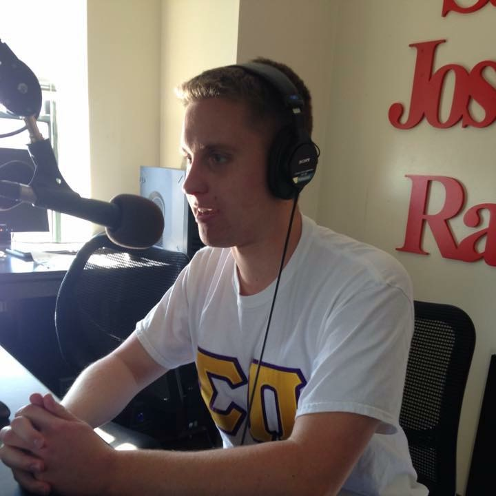

Richard was born in Paoli, PA and graduated from Conestoga High School in 2014.
A sophomore communications major, Bell has enjoyed his time on the Radio since his freshman year and has listened to radio his entire life.
Richard is also very passionate about sports and news, and this is the perfect outlet to discuss them both.
Feel free to send him a text if you have a topic in either of there areas that you want to discuss.
Outside of the set, you can find Richard in the Library or out on the town having a great time with friends.
Be sure to tune in and listen throughout the semester!
Patrick was born in West Chester, NY and is a Junior Student at Saint Joseph's University.
Patrick is a brother of the Sigma Pi Fraternity and is a standout student in the classroom.
Patrick is thrilled to bring a combination of class, talent, and enthuasiam to the show!
He is also a huge fan of pop culture news and brings all of us up to date on the latest happenings in this area each week.
Be sure to tune in this semester to listen to all that PK has to say!
